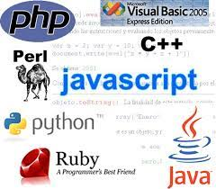
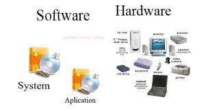

Elementos de un sistema de informacion computacional
Equipo computacional: hardware necesario para que el sistema de informacion funcione, integrado por computadoras y equipo periferico conectados a ellas.
Recurso humano: son las personas que interactuan con el sistema de informacion, suministran datos o utilizan el sistema para generar datos.
Fuente: son los datos e informacion que se introducen en el sistema, es decir, son las entradas requeridas para que el sistema informatico funcione.
Programas: software ejecutado por la computadora, el cual procesa la informacion de entrada para generar los resultados esperados.

:Telecomunicaciones: abarca el software y hardware que permite la transmision en forma electronica de texto e imagenes, entre otros.

Politicas y reglas de operacion: aplicadas a los procedimientos y mecanismo para hacer que una aplicacion de computadoras trabaje de acuerdo con estas o regir la parte funcional del proceso administrativo de la empresa.